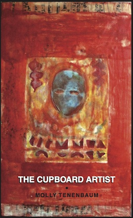

Books
The Cupboard Artist: freshly released from Floating Bridge Press!
The speaker in The Cupboard Artist rants about messy tables and boring pornography, celebrates ugly colors, compares love to a “Town of Handmade Cheeses,” conflates fava beans with female sexuality, chants a biography in bread, meditates on clothespins, and struggles to integrate the pleasures of solitude with the annoyances and intensities of relationship. She feels unknown, though a lover shares the house. To someone who prefers other arousals, she can’t explain that her “choice to look at would be / …“this gray/beach stone” or a “silvertint spoon.” In these tensions the speaker finds an expansive self who might leave the cupboard door open, the jars tipped, who might “love again if it can be done in light green,” and “only if it is done with peach walls.”
"In The Cupboard Artist we get mauve and jet and puce and garnet, bronze gold thread, and flame. We get caterpillar yarn, chocolate suede, clotted malt, and firefall velvet dresses and blue aromas of pine. We get braids of burlap and rose brown grass and wedges and spindles and trusses and tweezers and peppercorn cheese. In short, we get every color, texture, taste and almost-fingertip-touched longing, in this keenly noticed collision of the inner and outer life, this erotic, musical, painterly, reflective and seriously joyous book. I love every page of it." --Christopher Howell
 Winner of the Dorothy Brunsman Poetry Prize, 2007, Now, Molly Tenenbaum's second full-length collection conjures the rare--life within a yellow ice cream truck, a bridge tender watching "masts thin out to threads"--and honors the commonplace. These poems deliver their news, their "nows," in language as haunting and buoyant as the melodies that Tenenbaum, an accomplished musician, knows so well.
Winner of the Dorothy Brunsman Poetry Prize, 2007, Now, Molly Tenenbaum's second full-length collection conjures the rare--life within a yellow ice cream truck, a bridge tender watching "masts thin out to threads"--and honors the commonplace. These poems deliver their news, their "nows," in language as haunting and buoyant as the melodies that Tenenbaum, an accomplished musician, knows so well.
Tenenbaum's new poems in Now are odes to living in the present, but they're far from simple carpe diems. The speaker's "new life" is layered with memory and hope, and though the poems celebrate the immediacy of "mustard seeds jumping in ginger-oil," even the most vivid details resonate with what was--"We'd unwrap lemon-flecked air." This keeping ourselves present for our own lives is not easy task, and the narrator procrastinates, makes lists, urges herself on: "Please weather open the stiff / barn door of my chest." She proceeds not just with bravery, but with humor and joy: "Loved that word. Maroon, maroon." Intelligent, playful, musical, these poems transform pain, sadness, and all the richness of the world into a made life, a work of art. --Sharon Bryan
Now is a valentine from a poet in love with the world, and she has found the words to prove it. Read these poems aloud; let them swirl in "your earhole's riviera." Follow her into her garden, kitchen, library, heart. She will not lead you astray or maybe she will, but you will eat well, laugh, dance, and cry. Nothing is ordinary--her peace march turns into a "peach march." These poems are a sensual delight. --Barbara Hamby
 With an engaging enthusiasm for the music and play of language, Molly Tenenbaum writes poems of stark originality. A poet informed by a lifetime dedication to music, Tenenbaum possesses a technical brilliance that illuminates the beauties and mysteries of life and the natural world. Full of striking images, unexpected juxtapositions, and inventive lyricism, these poems compel us to atend to the details of the world and what is sacred in it.
With an engaging enthusiasm for the music and play of language, Molly Tenenbaum writes poems of stark originality. A poet informed by a lifetime dedication to music, Tenenbaum possesses a technical brilliance that illuminates the beauties and mysteries of life and the natural world. Full of striking images, unexpected juxtapositions, and inventive lyricism, these poems compel us to atend to the details of the world and what is sacred in it.
Molly Tenenbaum is a poet of the sensual meditation into which she lures us with the startling, the arresting turn of phrase: "The wanting was in me, then moved on..." (she announces at the beginning of "Fluent"). These are remarkable poems. As a poet, I find them irresistible; as an editor, I wish I'd been the one to publish them. --Gerald Costanzo
The poems in By a Thread--like the most intriguing melodies, the most alluring chords, the happiest and saddest of sounds and cadences--mesmerize. These poems have been structured and laid carefully, line upon line, nuance upon nuance, by the hand of a gifted writer. There are few conclusions stated among the brilliant and surprising images, no tight resolutions, no glib summaries. Read these poems for the truth of the reality they remember and for the truth of the reality they create. --Pattiann Rogers